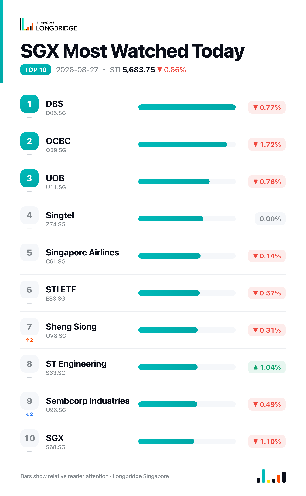

STI Falls 0.66% to 5,683.75 as Banks, Genting Singapore Lead Declines; Venture, ST Engineering Buck the Trend
The Straits Times Index closed at 5,683.75 on Thursday, down 37.84 points, or 0.66%, after climbing to an early high of 5,708.35 and sliding through the session to a low of 5,670.67. Declines outpaced advances 16 to 9 among the benchmark's 30 constituents, with five names unchanged, as all three local banks and Genting Singapore led the retreat while Venture, ST Engineering and Seatrium moved against the tide.
Thursday's weakness was broad rather than narrow. All three banks eased together for a second consecutive session — OCBC led the slide at 1.72%, with DBS down 0.77% and UOB down 0.76% — extending Wednesday's synchronized decline after Tuesday's uniform advance. Genting Singapore compounded the drag, falling as much as 3.88% in early trading before paring the loss into the close. Gains in industrial and technology-manufacturing names, including Venture, ST Engineering, Seatrium, Keppel and Wilmar, were not enough to offset the retreat elsewhere.
Session Movers
Venture Corp (V03.SG, +1.67%) was the session's best performer, still digesting an Aug. 6 first-half update that showed second-quarter net profit up 10.3% to S$63 million on revenue up 12.5% to S$726 million, with first-half net profit up 5.6% to S$119 million on strength in test-and-measurement, networking and semiconductor-equipment segments. The board lifted the interim dividend 20% to 30 cents a share alongside the results, and the company added Yeo Seng Chong Simon as an independent non-executive director from Aug. 1. There was no fresh disclosure Thursday. Consensus rates the stock Buy with a S$19.60 target, implying about 14.8% upside, with shares trading at 20.7 times earnings — cheaper than roughly 29% of the past year.
ST Engineering (S63.SG, +1.04%) advanced after unveiling two contract wins Wednesday: a NT$7.5 billion Taoyuan Metro Green Line extension in Taiwan, won with a Hyundai Rotem-led consortium and covering system integration, monitoring, communications and automatic fare collection over an expected seven-year build starting in the fourth quarter, and a toll-system modernization contract for its TransCore unit from the Tampa-Hillsborough Expressway Authority, covering an 18-mile, 18-toll-zone corridor with AI-based vehicle identification. Consensus still rates the stock Buy with an S$11.57 target, about 8.2% upside, even as shares trade at 57.7 times earnings — the richest multiple among its industry peers.
SGX (S68.SG, -1.10%) had no fresh company disclosure Thursday, easing in step with the broader market and giving back part of Wednesday's 0.67% gain, which had come as investors digested July's 37% year-on-year jump in securities turnover to S$46.2 billion and assets under management climbing to S$1.19 trillion. Shares still trade at 39.1 times earnings, near a 10-year high, having been cheaper only about 1.2% of the past decade. Consensus rates the stock Hold with a S$24.15 target, implying roughly 4.5% downside from Thursday's close.
Genting Singapore (G13.SG, -2.33%) was the session's weakest constituent, falling as much as 3.88% in early trading before paring the loss into the close. There was no new company disclosure Thursday; the stock remains anchored to the competitive dynamic flagged in mid-August coverage, when first-half revenue fell 1% to S$1.2 billion and EBITDA declined 8%, against a 12% revenue rise and 7% EBITDA growth at crosstown rival Marina Bay Sands, with Genting's casino license due to expire in February. Consensus rates the stock Hold with a S$0.70 target, implying about 10.4% upside, with shares trading at 24.96 times earnings — cheaper than roughly 37% of the past five years.

One point worth noting
Genting Singapore's intraday path stood out: shares fell as much as 3.88% in early trading before paring the loss to a 2.33% close, recovering close to 40% of the session's worst level even as it still finished as Thursday's biggest decliner. With no fresh company news behind the move, that partial recovery points to broad market pressure — not a Genting-specific shock — as the main driver.
This recap is for informational purposes only and does not constitute investment advice.